TECHVESTVENTURES DAILY RISK ALERTS — Emergent News Digest — Nov 22, 2026, 9:00 AM EST ALL RISK REPORTS click TVV Risk Center
TVV RESEARCH DIGEST — November 22, 2026 — 13 desks
Prioritized Risk Summary November 22, 2026
| Sections Ranked for Importance Today | |
|---|---|
| ECONOMY | Fed's Cook warns hikes may run past December; 2-year sits 88 bp over fed funds |
| TECHNOLOGY | SEC probes Nvidia's accounting as the board rejects Trump's call to reinstate Huang |
| GEOPOLITICS | Iran strikes Bahrain, home of the US Fifth Fleet; drone-hit Russian ship burns off Finland |
| STOCKS | S&P 500's 8.6% drop was the fifth-worst week since 2020; bettors see 22% odds of 6,200 |
| DERIVATIVES | Bettors raise CoreWeave bankruptcy odds to 18%; high-yield spreads widen to 3.52% |
| AI BOOST | Nadella warns AI-found bugs will cause more outages; China AI stocks lose $1.7 trillion |
| HEALTH | US loses measles elimination status; Congo Ebola passes 11,700 cases |
| TERROR | FBI and TSA renew terror warnings for Thanksgiving air travel |
| PREDICTIONS | Bettors see only 3% odds of a 2026 recession despite the stock rout |
| COMMODITY | Gold nears major support as it trades with stocks; heating oil 66% above Jan 2025 |
| INFRASTRUCT | Russian strikes cut power in five Ukrainian regions; Cuba grid reports conflict |
| SPACE | Magnetic north keeps drifting toward Siberia; no storms forecast through Nov 24 |
| QUAKES | No deadly M6+ quake; 2026 runs ahead of average with 131 M6+ events |
1. Major Geopolitical Conflict Developments
- ★ Iran strikes a US host state: Bahrain says Iranian attacks Saturday evening set fire to a civilian industrial facility in Sitra and injured two people, a Pakistani resident in critical condition and a Bahraini citizen in stable condition. Iran's Revolutionary Guards claim they hit two US Patriot radars at the Riffa and Awali bases; Bahrain rejects that claim, says the site was civilian and has asked the UN Security Council to act. Neither account is independently verified. Bahrain hosts the US Navy's Fifth Fleet. Reuters · Gulf Times · Daily News Egypt live
- ★ Gulf front widens: the Saudi-led coalition says it destroyed a Houthi drone heading for Riyadh on Sunday after intercepting a Houthi ballistic missile fired at western Saudi Arabia overnight; Saudi Arabia, the UAE, the GCC and Jordan condemned the Bahrain attack, and Riyadh warned Iran would bear the consequences of further attacks. The Guards also claim to have shot down a US MQ-1 drone east of the Strait of Hormuz; that claim is unverified and no US response has been found. Iran International · Daily News Egypt live
- ★ Escalation planning: Anadolu, citing a report, says Israel and the US agreed to develop joint plans for a possible escalation against Iran; Ynetnews describes Iran's gamble as breaking the US naval blockade to force a swift endgame. In Washington, House Democrats are split over risking a lame-duck shutdown to defund the Iran war (The Hill). Anadolu · Ynetnews · The Hill
- ★ War spills into the Baltic: the sanctioned Russian cargo ship Sparta II, owned by Defence Ministry logistics firm Oboronlogistika and bound for Kaliningrad, was hit by drones west of Russia's Gogland island and drifted burning into Finnish waters off Loviisa; Finland's military says Ukraine likely carried out the strike. All 16 crew were evacuated. Prime Minister Orpo: "War is spilling over into our immediate vicinity." Estonia's navy chief says further attacks in the Gulf of Finland cannot be ruled out, and an air alert sounded in Kaliningrad hours later. Al Jazeera · Reuters · AP
- ★ Poland update: The Washington Post reports President Trump called the Russian missiles that came down in Poland a mistake. Bettors briefly priced about 32% odds of another NATO Article 4 consultation by Dec 31 after the incident; that has eased to 12.5%, and a NATO-Russia military clash sits at 10.5% (see graph). Near term, the market treats Poland as a warning shot, not a trigger. Washington Post · Polymarket
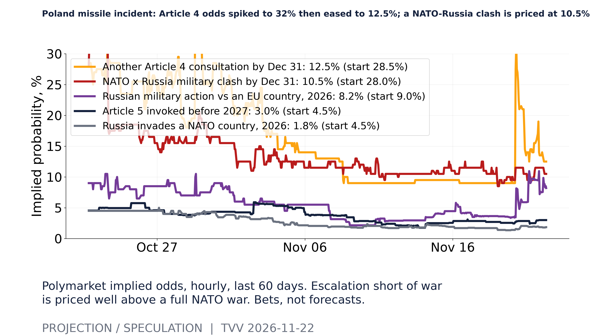
Poland missile incident: Article 4 odds spiked to 32% then eased to 12.5%; a NATO-Russia clash is priced at 10.5%. Polymarket implied odds, hourly, last 60 days. Escalation short of war is priced well above a full NATO war. Bets, not forecasts. [Projection/Speculation; data as of 2026-11-22 07:42 ET] Source: polymarket.com data page
2. Major Terror / Security Incidents
- ★ Thanksgiving travel threat, renewed: NewsNation reports the FBI and TSA are warning of potential terror threats before the holiday travel rush, following the joint bulletin on al-Qaeda calls for copycat aviation attacks; CNN reports US security officials warned of a terror threat to the aviation industry. Bettors give only 2.1% that an FAA outage by Nov 30 is officially blamed on a hack and 1.2% on Iran (see graph). Near term, markets see disruption risk from outages as far likelier than proven sabotage. NewsNation · CNN · Polymarket
- ★ West Bank settler violence: Palestinian homes and cars were set ablaze in attacks that Israeli politician Gadi Eisenkot decried as "Jewish terror" (The Times of Israel); House Democratic leader Hakeem Jeffries vowed sanctions on violent settlers (Haaretz). The Times of Israel · Haaretz
- ★ Cyber on public systems: the East-West Center's participant database was the target of a cyberattack (Honolulu Star-Advertiser), and a court records portal remains offline over the holidays after officials blamed "maintenance" despite a cyberattack warning. DW asks whether the US is under cyberattack as outages mount. Honolulu Star-Advertiser · DW
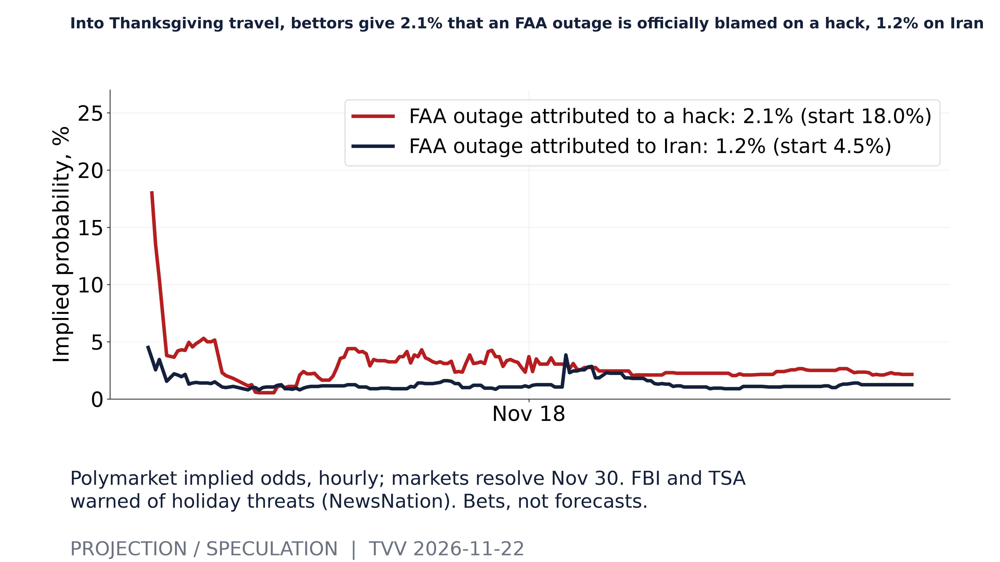
Into Thanksgiving travel, bettors give 2.1% that an FAA outage is officially blamed on a hack, 1.2% on Iran. Polymarket implied odds, hourly; markets resolve Nov 30. FBI and TSA warned of holiday threats (NewsNation). Bets, not forecasts. [Projection/Speculation; data as of 2026-11-22 07:42 ET] Source: polymarket.com data page
3. Earthquakes and Eruptions
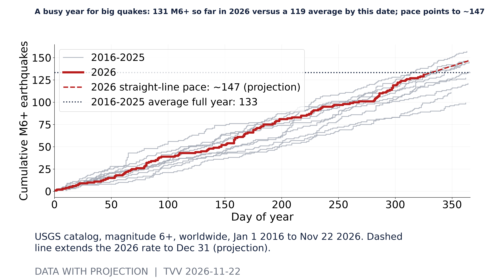
A busy year for big quakes: 131 M6+ so far in 2026 versus a 119 average by this date; pace points to ~147. USGS catalog, magnitude 6+, worldwide, Jan 1 2016 to Nov 22 2026. Dashed line extends the 2026 rate to Dec 31 (projection). [Data with projection; data as of USGS catalog to 2026-11-22] Source: earthquake.usgs.gov data page
4. Solar / Space Weather
- ★ Quiet sun for now: NOAA's 3-day forecast peaks at Kp 4 on Nov 23, below G1 storm level, with no significant solar wind features and a 1% chance of a radiation storm through Nov 24. NOAA SWPC
- ★ Long-horizon warning (weekly pole map): the north magnetic pole moved 454 km from 2015 to 2025, about 45 km a year, slowing to 37 km a year in 2024-25; NOAA's WMM2025 model projects about 33 km a year toward Siberia through 2030 (see graph). No one can predict the timing of a sudden geomagnetic shift, and the drift itself does not date a reversal. Michael Hentschel's own view: 2035 at the earliest, with critical earth changes along the way. NOAA NCEI
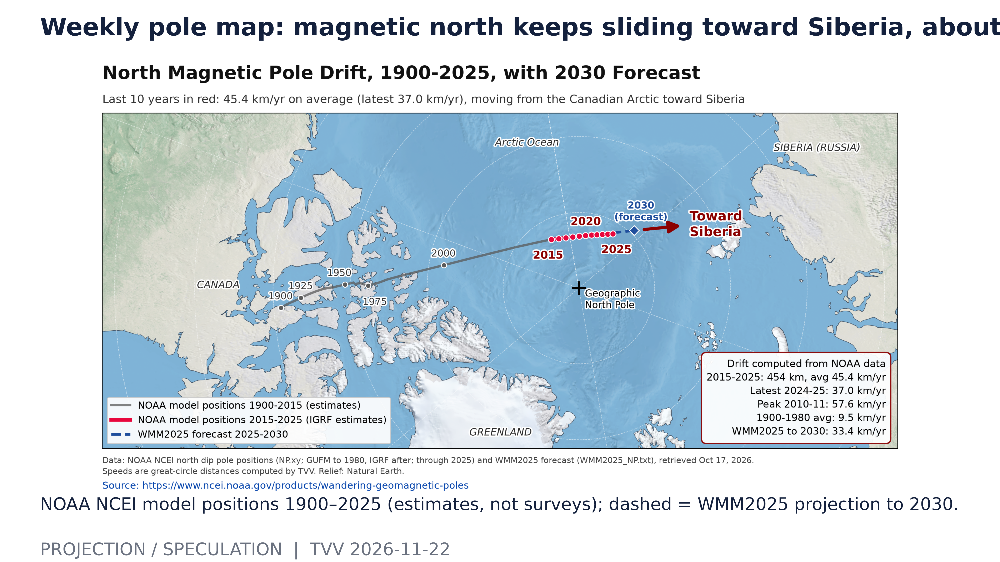
Weekly pole map: magnetic north keeps sliding toward Siberia, about 37 km a year. NOAA NCEI model positions 1900–2025 (estimates, not surveys); dashed = WMM2025 projection to 2030. [Projection/Speculation; data as of Historical 1900–2025; WMM2025 2025–2030] Source: ncei.noaa.gov data page
5. Critical Infrastructure / Transportation Disruptions
- ★ Ukraine's grid under fire again: the Energy Ministry reports power outages in five regions after Russian attacks, and Odesa adjusted transport and school schedules. Censor.net · Intent
- ★ Conflicting Cuba grid reports: EnergyNow reported that Cuba's national electric grid collapsed for unknown reasons, while Cuba's state Unión Eléctrica, via Cubadebate, forecast a 1,805 MW shortfall Saturday night with widespread blackouts but did not report a total grid failure. Treat the "collapse" claim as unconfirmed. EnergyNow · Cubadebate
- ★ Outage post-mortem: Microsoft's final Outlook outage report details testing gaps and safeguards that backfired (GeekWire); The Guardian asks why so many outages are happening, from hacks to AI to conspiracy theories. GeekWire · The Guardian
- ★ Data-center supply chain routed on the week: Nebius -29.8% to $81.31, CoreWeave -25.6% to $39.51 and Nvidia -22.9% to $125.53, versus -8.6% for the S&P 500 (see graph). Yahoo Finance · Yahoo Finance
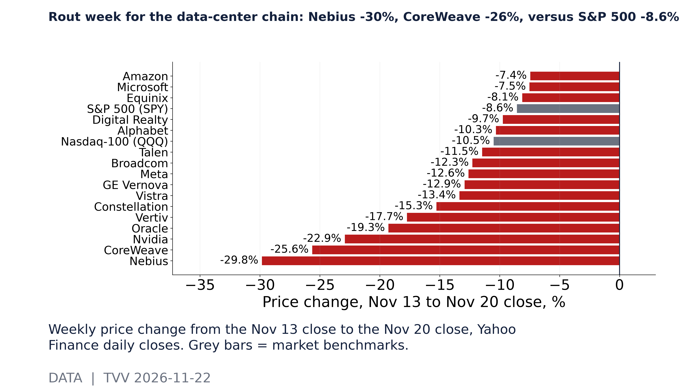
Rout week for the data-center chain: Nebius -30%, CoreWeave -26%, versus S&P 500 -8.6%. Weekly price change from the Nov 13 close to the Nov 20 close, Yahoo Finance daily closes. Grey bars = market benchmarks. [Data; data as of 2026-11-20 close] Source: finance.yahoo.com data page
6. Econo-Metrics
- ★ Hikes may not stop in December: Fed Governor Lisa Cook said September's quarter-point hike is unlikely to change inflation's path and warned that a Fed that falls behind may need additional, larger hikes later. The 2-year Treasury sits 88 basis points above fed funds (4.76% vs 3.88%), a market pricing further tightening (see graph). Near term, the bond market is betting on a December hike. Federal Reserve · Yahoo Finance · FRED
- ★ Global tightening: Chosun Ilbo reports the Bank of Korea is set to hike rates amid inflation, while Korean investors made a record net purchase of US Treasuries as the haven trade took over (Wolf Street says fundamentals briefly went out the window in the Treasury market this week). Chosun Ilbo · Chosun Ilbo · Wolf Street
- ★ No recession signal in jobs data yet: the real-time Sahm rule reads 0.00, far below its 0.50 trigger, with unemployment at 4.1% in October versus 4.4% a year earlier (see graph). Near term, the labor market is not confirming the stock market's alarm. Week ahead (Kiplinger): a holiday-shortened data calendar for Nov 23-27. FRED · Kiplinger
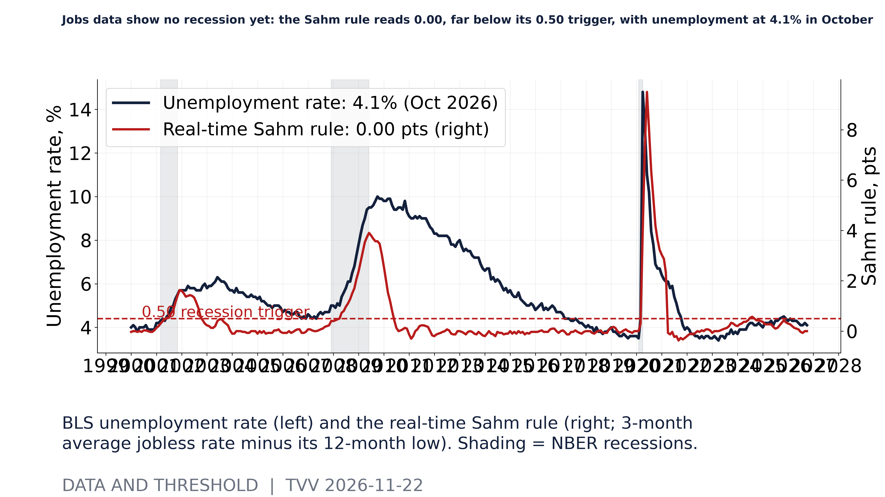
Jobs data show no recession yet: the Sahm rule reads 0.00, far below its 0.50 trigger, with unemployment at 4.1% in October. BLS unemployment rate (left) and the real-time Sahm rule (right; 3-month average jobless rate minus its 12-month low). Shading = NBER recessions. [Data and threshold; data as of 2026-10] Source: fred.stlouisfed.org data page
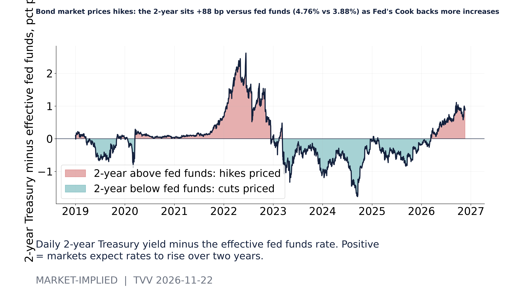
Bond market prices hikes: the 2-year sits +88 bp versus fed funds (4.76% vs 3.88%) as Fed's Cook backs more increases. Daily 2-year Treasury yield minus the effective fed funds rate. Positive = markets expect rates to rise over two years. [Market-implied; data as of 2026-11-19] Source: fred.stlouisfed.org data page
7. Epidemic / Bio-Metrics
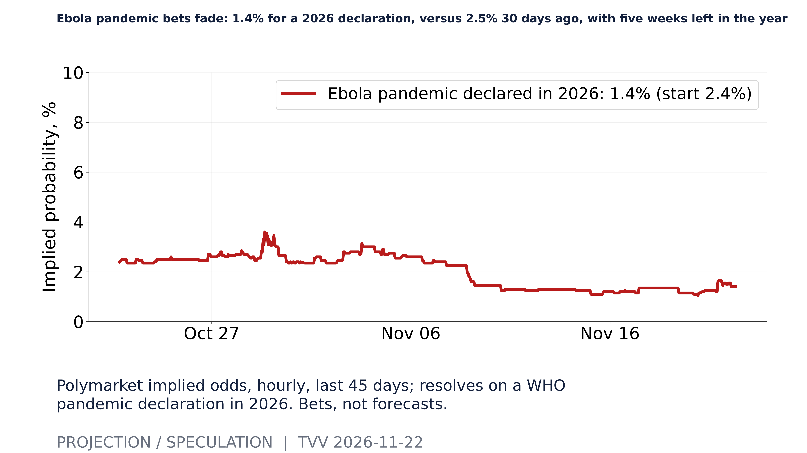
Ebola pandemic bets fade: 1.4% for a 2026 declaration, versus 2.5% 30 days ago, with five weeks left in the year. Polymarket implied odds, hourly, last 45 days; resolves on a WHO pandemic declaration in 2026. Bets, not forecasts. [Projection/Speculation; data as of 2026-11-22 07:42 ET] Source: polymarket.com data page
8. Gold and Silver and Commodities
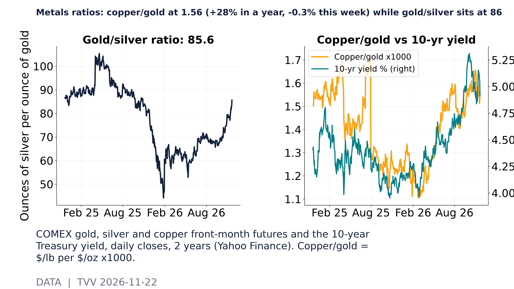
Metals ratios: copper/gold at 1.56 (+28% in a year, -0.3% this week) while gold/silver sits at 86. COMEX gold, silver and copper front-month futures and the 10-year Treasury yield, daily closes, 2 years (Yahoo Finance). Copper/gold = $/lb per $/oz x1000. [Data; data as of 2026-11-20 close] Source: finance.yahoo.com data page
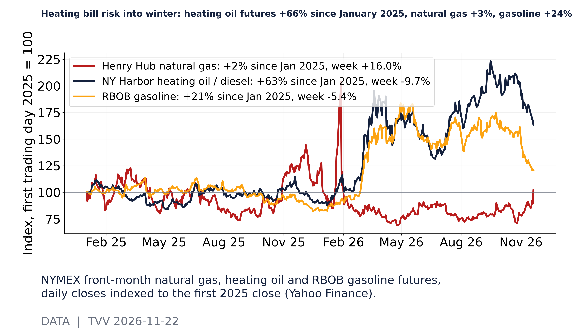
Heating bill risk into winter: heating oil futures +66% since January 2025, natural gas +3%, gasoline +24%. NYMEX front-month natural gas, heating oil and RBOB gasoline futures, daily closes indexed to the first 2025 close (Yahoo Finance). [Data; data as of 2026-11-20 close] Source: finance.yahoo.com data page
9. Stock Averages and Nasdaq Major Movers
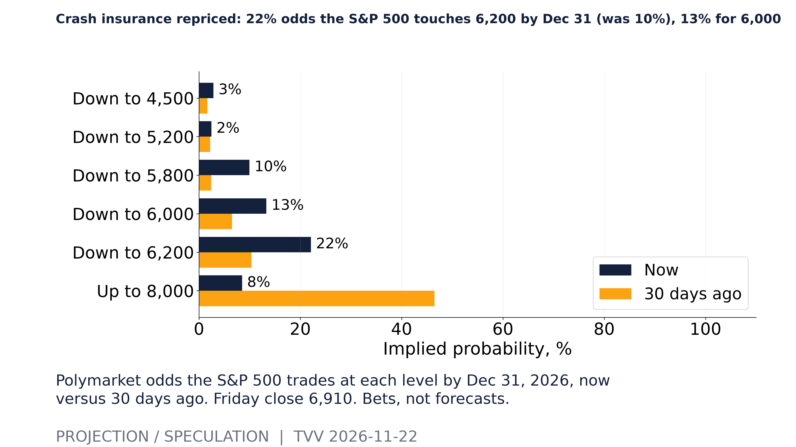
Crash insurance repriced: 22% odds the S&P 500 touches 6,200 by Dec 31 (was 10%), 13% for 6,000. Polymarket odds the S&P 500 trades at each level by Dec 31, 2026, now versus 30 days ago. Friday close 6,910. Bets, not forecasts. [Projection/Speculation; data as of 2026-11-22 07:42 ET] Source: polymarket.com data page
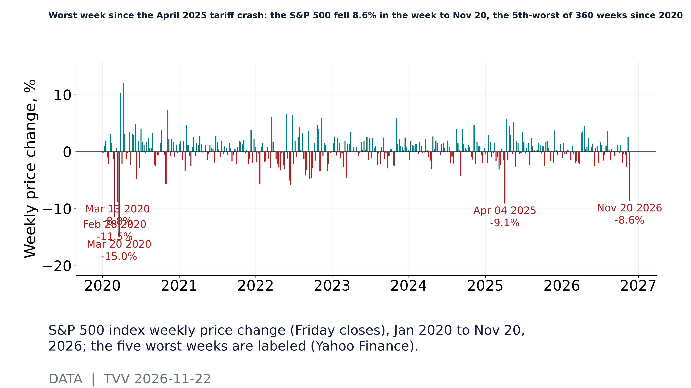
Worst week since the April 2025 tariff crash: the S&P 500 fell 8.6% in the week to Nov 20, the 5th-worst of 360 weeks since 2020. S&P 500 index weekly price change (Friday closes), Jan 2020 to Nov 20, 2026; the five worst weeks are labeled (Yahoo Finance). [Data; data as of 2026-11-20 close] Source: finance.yahoo.com data page
10. Polymarket and Kalshi Sentiment Highlights
- ★ Stocks crack, recession bets don't: Polymarket gives a US recession by the end of 2026 only 3.0%, versus 6.5% a month ago, even as the S&P 500 sits 12% below its 60-day high (see graph). Near term, bettors read the selloff as an AI-valuation event, not an economic downturn. Polymarket
- ★ Nvidia's year-end value: bettors now give 82.1% that Nvidia ends 2026 below $4 trillion in market value, up from 5.9% a month ago; the $4.5-5 trillion bucket fell to 2.8% from 20.0% (see graph). Polymarket
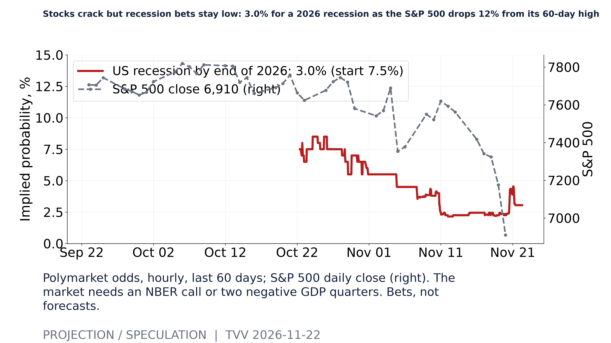
Stocks crack but recession bets stay low: 3.0% for a 2026 recession as the S&P 500 drops 12% from its 60-day high. Polymarket odds, hourly, last 60 days; S&P 500 daily close (right). The market needs an NBER call or two negative GDP quarters. Bets, not forecasts. [Projection/Speculation; data as of 2026-11-22 07:42 ET] Source: polymarket.com data page
11. Tech-Metrics
- ★ Nvidia's SEC probe sharpens: Reuters says SEC enforcement staff are examining Nvidia's accounting, and The New York Times confirmed an early-stage inquiry that may end without charges. Reports focus on Nvidia's 2025 change in geographic reporting that removed Singapore from its breakdown; the FT reported about $104 billion of 2025 revenue booked through Singapore. Yahoo Finance notes Nvidia delayed its 10-Q and receivables reached 64 days of sales, the most since 2022. Shares fell 14% Friday to $125.53. Reuters · AFP · The Next Web · Yahoo Finance
- ★ Board versus President: Trump called for Jensen Huang's reinstatement, but chairman Harvey Jones says the board unanimously accepted his resignation and will not reinstate him; the board hired Wachtell, Lipton to investigate, and WIRED reports Huang's "lack of candor" moved directors. Bettors give Huang 6.0% to rejoin by year-end and 31.5% by end-2027 (see graph). AFP · The Next Web · Polymarket
- ★ Chips to China: the WSJ reports on an Alice Huang associate accused of funneling Nvidia chips to China, and The New York Times says Chinese spies targeted AI chips years before the scandal; Treasury Secretary Bessent says no further export restrictions are needed (PBS). Investing.com tallies an Nvidia downgrade among the week's big analyst moves. WSJ · New York Times · PBS · Investing.com
- ★ Anthropic's IPO under review: Reuters reports Anthropic ran an unusually controlled IPO ("Project Lantern"), limiting each underwriter to four senior bankers and barring them for six months from work with rivals including OpenAI, chafing some banks; the FT asks whether Anthropic and its bankers got a key call wrong. Barron's estimates Amazon and Google could own $400 billion of Anthropic stock post-IPO. Reuters via Investing.com · Financial Times · Barron's
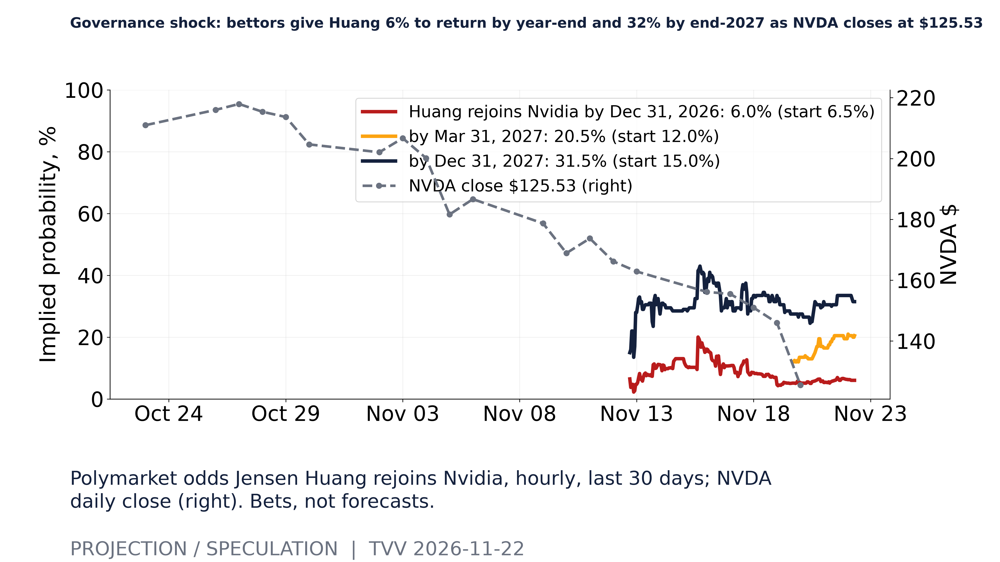
Governance shock: bettors give Huang 6% to return by year-end and 32% by end-2027 as NVDA closes at $125.53. Polymarket odds Jensen Huang rejoins Nvidia, hourly, last 30 days; NVDA daily close (right). Bets, not forecasts. [Projection/Speculation; data as of 2026-11-22 07:42 ET] Source: polymarket.com data page
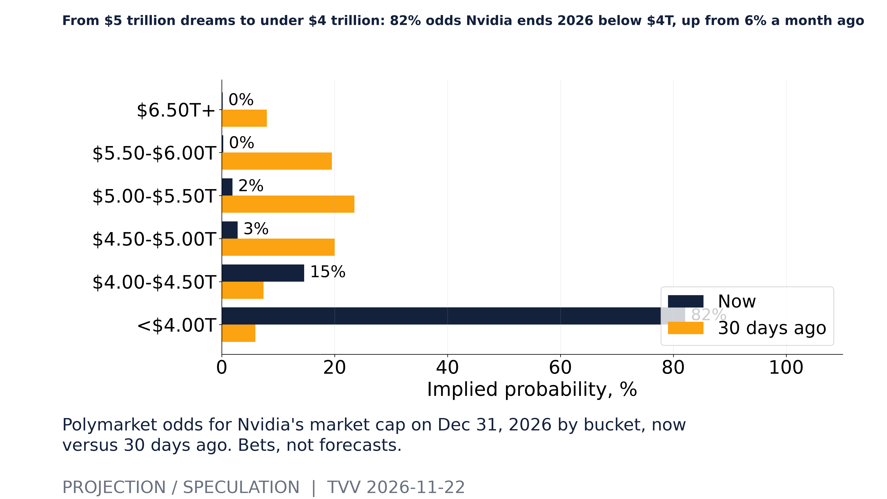
From $5 trillion dreams to under $4 trillion: 82% odds Nvidia ends 2026 below $4T, up from 6% a month ago. Polymarket odds for Nvidia's market cap on Dec 31, 2026 by bucket, now versus 30 days ago. Bets, not forecasts. [Projection/Speculation; data as of 2026-11-22 07:42 ET] Source: polymarket.com data page
12. AI Hypergrowth Risks
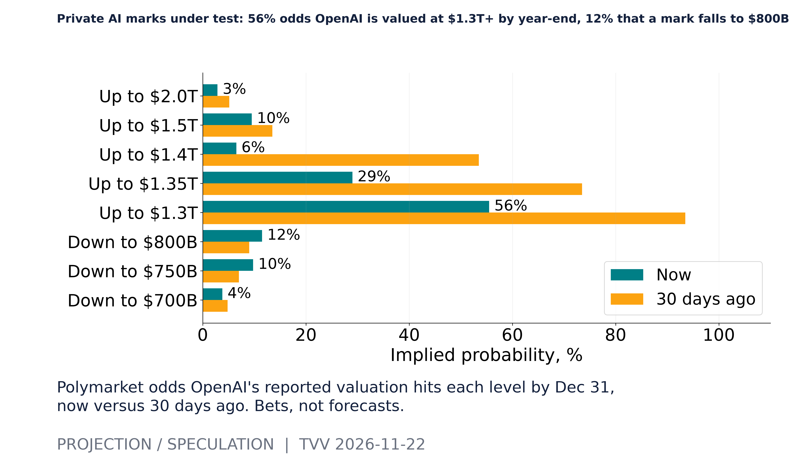
Private AI marks under test: 56% odds OpenAI is valued at $1.3T+ by year-end, 12% that a mark falls to $800B. Polymarket odds OpenAI's reported valuation hits each level by Dec 31, now versus 30 days ago. Bets, not forecasts. [Projection/Speculation; data as of 2026-11-22 07:42 ET] Source: polymarket.com data page
13. Finance Bubble Derivatives Risk
- ★ Neocloud credit fear: bettors give 18.0% odds CoreWeave files for bankruptcy by end-2027, up from 10.5% a week ago, as shares fell to $39.51 (see graph). The Guardian reports CoreWeave owes $47 billion, must repay more than $10 billion next year and lost $709 million last quarter on $3.6 billion of revenue. Near term, the market is pricing real default risk in AI infrastructure debt. Polymarket · The Guardian · Yahoo Finance
- ★ Credit is the tell: the ICE BofA US high-yield spread widened to 3.52% on Nov 19 from 3.33% a month earlier and a 2026 low of 2.60%; investment-grade widened to 0.94% from 0.87% (see graph). The WSJ examines the bond market's surprising take on the AI trade. FRED · WSJ
- ★ Crypto leverage update: Bitcoin bounced more than 9% from a $55,130 low, its weakest since September 2024, to reclaim $60,000 after about $1.8 billion of leveraged positions were liquidated (CoinDesk); BeInCrypto reports only 5% of cryptocurrencies are rising as Fed hike fears grow. CoinDesk · BeInCrypto
- ★ Private credit's limits: Bloomberg reports private credit's $100 billion Saudi prize is proving hard to win, and TradingKey details investor worries over borrowing by Meta, Alphabet, Microsoft and Oracle to fund AI. Bloomberg · TradingKey
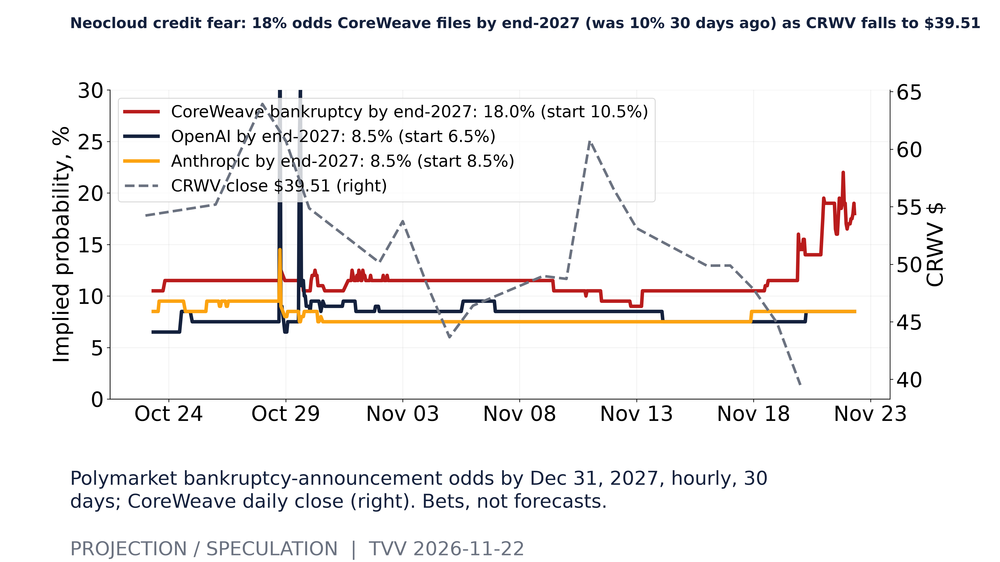
Neocloud credit fear: 18% odds CoreWeave files by end-2027 (was 10% 30 days ago) as CRWV falls to $39.51. Polymarket bankruptcy-announcement odds by Dec 31, 2027, hourly, 30 days; CoreWeave daily close (right). Bets, not forecasts. [Projection/Speculation; data as of 2026-11-22 07:42 ET] Source: polymarket.com data page
Prioritized Risk Summary November 22, 2026
| Sections Ranked for Importance Today | |
|---|---|
| ECONOMY | Fed's Cook warns hikes may run past December; 2-year sits 88 bp over fed funds |
| TECHNOLOGY | SEC probes Nvidia's accounting as the board rejects Trump's call to reinstate Huang |
| GEOPOLITICS | Iran strikes Bahrain, home of the US Fifth Fleet; drone-hit Russian ship burns off Finland |
| STOCKS | S&P 500's 8.6% drop was the fifth-worst week since 2020; bettors see 22% odds of 6,200 |
| DERIVATIVES | Bettors raise CoreWeave bankruptcy odds to 18%; high-yield spreads widen to 3.52% |
| AI BOOST | Nadella warns AI-found bugs will cause more outages; China AI stocks lose $1.7 trillion |
| HEALTH | US loses measles elimination status; Congo Ebola passes 11,700 cases |
| TERROR | FBI and TSA renew terror warnings for Thanksgiving air travel |
| PREDICTIONS | Bettors see only 3% odds of a 2026 recession despite the stock rout |
| COMMODITY | Gold nears major support as it trades with stocks; heating oil 66% above Jan 2025 |
| INFRASTRUCT | Russian strikes cut power in five Ukrainian regions; Cuba grid reports conflict |
| SPACE | Magnetic north keeps drifting toward Siberia; no storms forecast through Nov 24 |
| QUAKES | No deadly M6+ quake; 2026 runs ahead of average with 131 M6+ events |
TECHVESTVENTURES ACTION-ALERT — November 22, 2026 see all graphs click TVV Risk Center
EDITOR — Michael Hentschel
Most news events require or spawn no action or reaction, some (but not many) are or become warnings. We draw attention to substantial lifestyle risks and market risks in particular, some created by Mid-Term Vote anxieties, Middle East tensions, vast over-indebtedness globally, and other events we track. Longer term but capable of causing sudden power surges as serious as the Carrington Event. Climate instability occasioned by long-term cyclical solar electro-magnetic flares, is becoming much more prominent and even more likely. New AI predictive analytics and pattern seekers are pointed in some of these directions, and we monitor imminent likelihood. Some readers might hedge and others might see opportunity. The above is not investment advice.